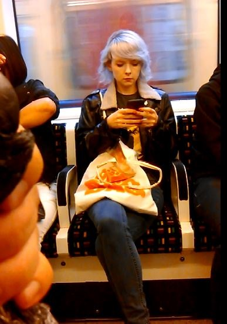

| home | about | links | fanart | more |
|
rose's history is... weird, to say the least. i'll try and explain it to the best of my knowledge. rosemary lisa wolfe gotto is, or was, a female games reviewer, blogger, youtuber, and physicist. she has had a presence on the internet since at least 2003. she was a member of several sites: deviantart, livejournal, blogger, diaryland, etc. much of the content from these websites has been deleted now. not much is known about this period of time. she used to take pictures of herself and post them on her livejournal and her deviantart. what filled the pages of her diaryland are a mystery to all. sometime between then and 2011, she used to post on /b/. sauce. in 2007, she started to post videos to youtube. she had a sizeable amount of viewers. these people would be considered the supreme oldfags. little to no stalkering going on in this era. in august of 2011, this video of her building a computer was posted on /g/. people went crazy. they posted pictures of her on /g/ and /v/. stalkering begins, see fans. the stalker dox'd her and her family, and soon she deleted much of her material, most of which was archived. she fled from the internet. rose threads were banned on /g/ and /v/, so her fans migrated to /b/. she made a few more videos in 2012 and in 2013. nothing has been heard from her since, except for a comment made on an oscars related video in 2014. she was also spotted on the bus sometime in april/may. this pic was posted on /b/, spergs everywhere creamed their pantaloons.  since then, threads have migrated to /r9k/, sometime in the summer of that year. the rational behind this was so that threads would last longer before 404'ing. it wasn't particularly a good idea, and the guy who suggested it also admitted so, saying that the influx of robots from /r9k/ made the threads less fun than they already were. that and 24/7 threads. if you feel that this summary is appaling, feel free to send a suggestion. website will be constantly updating. |